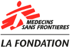
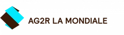

À l'écoute d'opportunités — CDI & missions
Je rends lisibles et intuitifs les environnements les plus complexes.
Senior product designer spécialisé en architecture de l'information, design systémique et accessibilité. Je choisis des projets à impact concret — actuellement en mission chez MSF sur un outil médical dédié à la lutte contre l'antibiorésistance.
Approche & principes
Je conçois des produits numériques simples et fiables, pensés pour des usages réels et éprouvés face à des environnements complexes.
01
Inclusif
L'inclusivité commence par les fondamentaux d'interface : contrastes soignés, typographies lisibles et navigation évidente pour tous les profils d'utilisateurs.
02
Systémique
Je conçois des architectures pérennes et des design systems modulaires, attentifs à leur empreinte technique et à leur impact social ou environnemental au sein de l'organisation.
03
De bout en bout
J'assure le lien continu entre recherche, stratégie et intégration, en travaillant main dans la main avec les développeur·euse·s et les expert·e·s métier jusqu'à la mise en production.
04
Collective
Le design n'est jamais un acte isolé : j'anime et synchronise les équipes de design, tout en impliquant activement les communautés d'utilisateurs dans la co-conception.
Projets phares
Deux études de cas illustrant ma démarche face à des environnements complexes et exigeants.

2019 — 2022Origami — Industrialisation du design system
Parcours professionnel
Plus de dix ans d'expérience en design, pilotant la recherche utilisateur, l'architecture de l'information et l'outillage UI.
Lead Product Designer Freelance (Antibiogo)
MSF / AntibiogoJ'accompagne l'évolution de l'application Antibiogo (dispositif médical) : recherche utilisateur continue, conception de nouvelles fonctionnalités et stratégie UX pour le déploiement sur le terrain (localisation, formation des laboratoires).
Lead Product Designer (Antibiogo)
MSF FoundationJ'ai piloté le design de l'application Android Antibiogo sous certification médicale IVDD/IVDR. J'ai conçu les parcours clés de l'application, mené la recherche terrain en laboratoire, structuré le design system en lien étroit avec l'équipe tech et contribué aux études d'usabilité avec un cabinet spécialisé.
Senior Product Designer
AatlantideJ’ai réalisé des audits UX/UI sur les parcours clés des plateformes SaaS praticiens (facturation, historique patient) pour identifier les points de friction. En parallèle, j’ai amorcé les fondations d’un design system et cadré les premières bonnes pratiques de conception d’interface pour l’équipe.
Product Designer (UX/UI)
AG2R LA MONDIALEJ'ai conçu les espaces clients web du groupe au service de 15 millions d'assuré·es. J'ai unifié l'architecture de l'information pour lier plusieurs services cloisonnés en une navigation fluide (desktop et mobile), animé les ateliers de co-conception et piloté le lancement du design system « Origami ».
Projets Académiques
Gobelins, l'école de l'imageJ'ai rédigé un mémoire de recherche : « Le rôle et l'éthique des designers dans l'accessibilité et l'inclusion ». J'ai conceptualisé et conçu, en équipe, « Dans les pas de Picasso », une installation d'exposition interactive réactive pour le Musée Picasso-Paris (projet étudiant).
Parcours professionnel antérieur
Communication, Web Design & Front-EndDix ans d'expérience préalable entre design graphique, direction artistique et intégration web, avant ma spécialisation en product design.
Chargé de communication + Web designer
Crédit Agricole Sud Rhône AlpesChargé de Communication
CR&ON ArchitectesContent & Community Manager
Freeride World TourRédacteur
Nivéales média (Snowsurf & Ski Magazine)Contact
Je suis disponible pour des rôles de Product Designer senior, du conseil sur des problématiques produit complexes ou des interventions pédagogiques. Curieux et polyvalent, j'aime m'emparer de sujets exigeants : discutons de vos projets.
francois.ohl@gmail.com